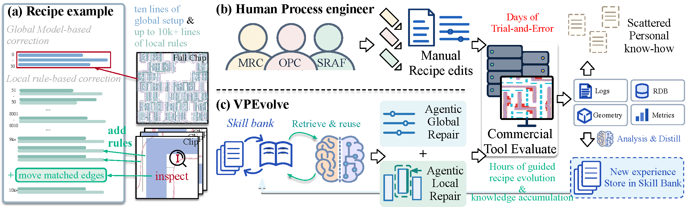
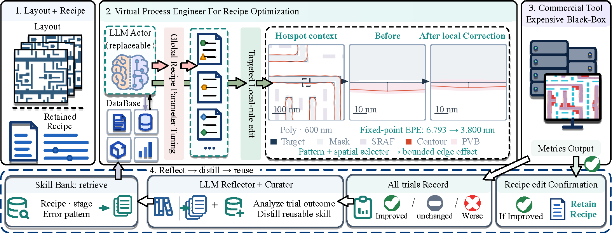

POLYMAX EPE · NM
18.294→5.361
Baseline to VPEvolve
Research preprint · Computational lithography
A virtual process engineer that improves lithography recipes through commercial-tool measurements and a reusable bank of engineering experience.
Propose a recipe edit.
Measure its physical effect.
Keep the evidence for the next decision.
01 / OVERVIEW
Optical proximity correction recipes combine global settings with local rules. A change that fixes one hotspot can interact with existing rules, while knowledge from commercial-tool trials can remain scattered across code and logs.

Optical proximity correction (OPC) recipes grow as engineers add local rules to repair newly discovered lithography hotspots. Each correction can interact with existing rules, while lessons from commercial-tool trials remain scattered across code and logs. VPEvolve combines a Virtual Process Engineer (VPE) harness with a Skill Bank of measured engineering experience. The harness equips a frozen language model with process manuals, layout analysis, recipe editing, and commercial-tool evaluation. The actor proposes changes to the global parameters, local targeted rules, or diagnostic trials. After each evaluation, an LLM reflector and curator turn the measured response into evidence-linked judgments. The actor retrieves them before its next trial. Feasible improvements update the retained recipe; every measured trial informs the Skill Bank that guides the next edit. The model weights remain fixed. On a FreePDK45-derived benchmark with ten commercial-tool evaluations per case, VPEvolve reduces the mean per-case maximum edge placement error from 18.294 to 5.361 nm on Poly and from 22.052 to 15.692 nm on Metal1. Every final recipe satisfies the predefined quality constraints and improves the maximum error by at least 0.1 nm.
02 / METHOD
A fixed harness gives the actor a controlled way to inspect a layout, edit a recipe, and request commercial-tool evaluations. Reflections on measured trials become reusable, evidence-linked guidance in the Skill Bank.

Choose a global parameter edit, targeted local rule, or diagnostic trial.
Run the commercial tool and check the measured result against quality constraints.
Retain feasible recipe improvements and turn every measured trial into evidence for the next edit.
03 / RESULTS
Mean per-case maximum edge placement error on the FreePDK45-derived benchmark, using ten commercial-tool evaluations per case.
18.294→5.361
Baseline to VPEvolve
22.052→15.692
Baseline to VPEvolve
Every final recipe in the reported comparison satisfies the predefined quality constraints and improves maximum EPE by at least 0.1 nm. See the paper for the full protocol, other metrics, comparisons, and limitations.
READ THE FULL WORK
The signed preprint contains the complete evaluation and supporting details.